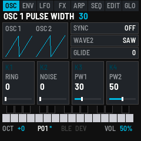
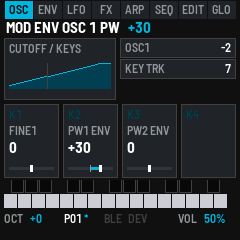

Bass Something 2
Bass Something 2 turns the M-VAVE FM-1 into a monosynth inspired by the Novation Bass Station II. It has two oscillators and a sub, a ring modulator and noise. The filter is Classic (low, band or high pass at 24 or 12 dB) or Acid (a diode ladder), with drive and distortion. It has a mod envelope, an amp envelope, two LFOs, the Bass Station II's 32 arp rhythms with its 32-step sequencer (four sequences) and 32 patches. Patches go to and from a Bass Station II editor as SysEx. Everything shows on the FM-1's screen as a small Bass Station II front panel, and MIDI goes in and out over USB, Bluetooth and TRS.

1Install
Try it first: the emulator runs the same code in the browser, with sound. Play it with the mouse, a touch screen or the computer keyboard.
Install from the browser: in Chrome or Edge, connect the FM-1 by USB, open the installer and press Install. The browser asks once to allow MIDI: allow it. Don't unplug the cable while it writes.
Install from a terminal: python3 tools/fm1_install.py bass-something-2-VERSION.fwsc.
Back to the stock firmware: the installer's last section writes M-VAVE's own firmware back. An FM-1 that doesn't start can be recovered too. For details, see felucca-bsp's tools/fm1_rescue.sh.
At power-on the screen shows BASS SOMETHING 2 in cyan, "Inspired by the Bass Station 2" under it, and an oscilloscope whose wave morphs from sine to triangle to saw to a sweeping pulse. The firmware's version (such as v0.1) is in the bottom right corner. Then the panel opens on the patch you last saved. The emulator shows the same splash when you switch it on.
2The screen

The screen is a small Bass Station II front panel: matte black with dark grey cards, and whatever is live in cyan.
| Part | What it shows |
|---|---|
| Section tabs | OSC, ENV, LFO, FX, ARP, SEQ, EDIT and GLO. The section you're in is lit cyan. ARP and SEQ are written in cyan while they play. |
| Title line | The page's name and, while a note plays, its name, its velocity (V) and how hard the key is pressed (P). For a moment after a change, what changed: turning a knob shows its whole name, such as RESONANCE for RESO. |
| Picture | The section's sound: the waves, the filter's curve, the envelope (the stage it's in lit), the LFO (where it is now), the arp's rhythm, the sequencer's steps or the mixer's levels. |
| Switches | What SELECT, ALGO and PRESET set on this page, and their settings. |
| Knobs | K1 to K4: what each sets, its value and a slider. A knob lights cyan for a moment as it turns. |
| Keys | The 27 keys, black above white. A held key fills cyan to its velocity, and white over that shows its pressure. A key whose note is held from MIDI in is all cyan. |
| Bottom lines | OCT, the octave. P01 to P32, the patch, with * while it has changes that aren't saved. BLE, lit while a computer or phone is connected over Bluetooth, and DEV, lit while a Bluetooth MIDI device is. VOL, MASTER's volume. MIDI IN, where the last message came from (USB, BLE or TRS) and its bytes. ARP, SEQ or REC while one of them plays the voice, and AFX while AFX mode is on. |
The pages
Each section button opens its section's page. Press it again for its next page, where it has more.
| Button | Page | Again |
|---|---|---|
| HOME | OSC FILTER: the oscillators and the filter | OSC MIX: sync, oscillator 2's wave, glide, ring, noise, pulse widths; then OSC TUNE: oscillator 1's tuning, key tracking, the mod envelope on the pulse widths |
| ENV | MOD ENV: the mod envelope and its depths | AMP ENV: the amp envelope and the velocities |
| LFO | LFO 1 | LFO 2, with the pulse width modulation |
| FX | MIX FX: the mixer, the sub's wave, the ranges, distortion | |
| ARP | ARP: the arpeggiator | switches the arp on or off |
| SEQ | SEQ: the sequencer | recording on or off (the arp's REC) |
| EDIT | PATCH: pick, save and send patches | |
| GLO | GLOBAL MIDI | GLOBAL SYSTEM, then GLOBAL DUMP |
The buttons' lights: SAVE is lit while there's something to save, ARP while the arp is on, SEQ while recording, and PLAY while the sequencer plays. The other buttons glow dimly, so they can be found in the dark.
The keys light while their notes are held, whether you're playing them or they come in over MIDI. A note held below the keys' reach lights OCT-, one above lights OCT+.
3Playing
| Control | What it does |
|---|---|
| Keys | Play the voice, louder the harder they land. The last key pressed sounds, and the pitch glides to it if GLIDE is up. Each key also goes out as MIDI (see MIDI and audio). |
| OCT− · OCT+ | The octave, from −2 to +2. |
| SEL | The sub oscillator: one octave under oscillator 1, or two. |
| MASTER | The volume. |
| REC | A random sound (see below). On GLOBAL SYSTEM it finds a Bluetooth MIDI device instead. |
| REC + OCT+ | Hold REC and press OCT+: AFX mode on or off. |
| GLO + OCT+ | Hold GLO and press OCT+: GLOBAL RND, for the RND Synth's seeds. See RND seeds. |
| PLAY | Plays the sequence at its own key (the arp on, in PLAY), or stops it. |
| SAVE | Saves the sound into its patch, and the settings. |
The keys sense how hard they're played, with no change to the FM-1. The 20 lowest keys (F3 to C5) give velocity and pressure; the top seven give velocity only. GLO SYS's VELOCITY sets how the keys answer: SOFT (louder for a light touch), NORMAL or HARD.
A random sound
Press REC and let go: every control on OSC FILTER, OSC MIX, MOD ENV, AMP ENV, LFO 1 and LFO 2 is set at random. The filter is kept a little open and the attack under a second, so the result is heard at once. The screen says SOUND RANDOMIZED. The mixer, the arp and the sequencer are left as they were. Press REC again for another, or SAVE to keep it.
AFX mode
Hold REC and press OCT+ to switch AFX mode on. The screen says AFX ON, and AFX stays lit at the bottom right. Each key then plays the sound with its own changes: oscillator 1's wave, the filter's cutoff, the decay of both envelopes and the noise. For example, the lowest F is a dark, short sine, like a kick, and some keys add noise for snares and hi-hats. Each key keeps its changes in any octave, and MIDI notes in play the key they'd be on the keyboard. The patch itself doesn't change: switch AFX off (REC + OCT+ again) and the keys all play it as before. AFX is off each time the FM-1 starts.
4The sound
The signal goes: oscillators 1 and 2, the sub and noise → the mixer (or the ring modulator) → the filter, with its drive in front → the amp envelope → distortion → MASTER. The mod envelope and the two LFOs move the pitch, the cutoff and the pulse widths. Everything on these pages belongs to the patch, and SAVE keeps it.
Times on the envelopes go from 2 ms (0) to 10 s (127). A depth of ±63 on an envelope or an LFO moves the cutoff over its whole range, or the pitch by 12 semitones.
Like an analog synth, the engine is never quite still. These behaviours are always on and have no controls:
- Drift: each oscillator's pitch wanders slowly by a cent or two, separately from the other one. Even at FINE 0 the two oscillators beat gently against each other.
- Free-running oscillators: a new note doesn't restart the oscillators. Each attack begins somewhere different in the wave, so repeated notes vary a little, as they do on the Bass Station II.
- Supply sag: loud notes squash slightly, by about 1.5 dB at full velocity. Soft notes are unaffected.
- Envelope curves: attacks rise like a charging capacitor, fast at first and then easing into the top, so short attacks snap. Decays and releases fall the same way. The times on the knobs are unchanged.
- Mixer warmth: the oscillators, sub and noise are summed into a gentle, slightly lopsided saturation before the filter, even with DRIVE at 0. Loud peaks round off and stacked waves add a little grit and even harmonics.
- Filter tolerance and heat: like two analog units, every FM-1's cutoff sits slightly off the dial, by up to 1 %. A note held loud warms the filter over about half a minute, more with high resonance, and its cutoff drifts down by up to 2 %. It cools again over a minute or so once you stop.
OSC FILTER (HOME)
| Control | Setting |
|---|---|
| SELECT · OSC2 | Oscillator 2's tuning in semitones, −12 to +12, from oscillator 1. |
| ALGO · FILTER | LP24, LP12, BP24, BP12, HP24, HP12: the Classic filter, low, band or high pass at 24 or 12 dB. ACID: a diode ladder's low pass, thinner, with its bass kept under the resonance, like a 303. |
| PRESET · WAVE | Oscillator 1's wave: SAW, SQUARE, SINE, TRI or PULSE. |
| K1 · CUTOFF | The filter's cutoff, 0 to 127: about 40 Hz to 17.8 kHz. |
| K2 · RESO | The resonance, 0 to 127. Near the top the filter sings on its own, a clean sine at the cutoff. |
| K3 · DRIVE | Overdrive into the filter, 0 to 127. |
| K4 · FINE | Oscillator 2's fine tuning in cents, −100 to +100. A few cents apart, the two oscillators beat. |
OSC MIX (HOME again)

| Control | Setting |
|---|---|
| SELECT · SYNC | Oscillator 2 hard-synced to oscillator 1: OFF or ON. Sweep OSC2's tuning or its mod envelope depth for the classic sync sound. |
| ALGO · WAVE2 | Oscillator 2's wave: SAW, SQUARE, SINE, TRI or PULSE. |
| PRESET · GLIDE | Portamento: 0 jumps to each note; 1 to 127 glides, from 3 ms to 2.5 s. |
| K1 · RING | From the two oscillators mixed (0) to their ring modulation (127). |
| K2 · NOISE | White noise in the mix, 0 to 127. |
| K3 · PW1 | Oscillator 1's pulse width, 5 to 95 %, when its wave is PULSE. |
| K4 · PW2 | Oscillator 2's pulse width, the same. |
OSC TUNE (HOME a third time)

| Control | Setting |
|---|---|
| SELECT · OSC1 | Oscillator 1's coarse tuning, −12 to +12 semitones. The sub oscillator follows it. |
| ALGO · KEY TRK | How far the cutoff follows the keys, 0 (not at all) to 7 (fully: an octave higher for each octave up). The cutoff is as set at C3; the picture draws its line across the keys. New patches start at 7, as on a Bass Station II. Patches saved before this version start at 0, so they sound as they did. |
| K1 · FINE1 | Oscillator 1's fine tuning in cents, −100 to +100. |
| K2 · PW1 ENV | How far the mod envelope moves oscillator 1's pulse width, −63 to +63 (±45 % at full), when its wave is PULSE. |
| K3 · PW2 ENV | The same for oscillator 2. |
MOD ENV (ENV)

| Control | Setting |
|---|---|
| SELECT · OSC1 | How far the envelope moves oscillator 1's pitch, −63 to +63. |
| ALGO · FILTER | How far it moves the cutoff, −63 to +63. |
| PRESET · OSC2 | How far it moves oscillator 2's pitch, −63 to +63. |
| K1 to K4 | ATTACK, DECAY, SUSTAIN, RELEASE, 0 to 127. |
AMP ENV (ENV again)

| Control | Setting |
|---|---|
| SELECT · AMP VEL | How much a key's velocity sets the volume, −63 to +63. At +63 a soft note is quiet and a hard one loud; at 0 every note is as loud; below 0 it's reversed. |
| ALGO · MOD VEL | The same for the mod envelope's depths (on the pitch, the cutoff and the pulse widths): at +63 a hard note opens the filter further. |
| K1 to K4 | ATTACK, DECAY, SUSTAIN and RELEASE of the volume, 0 to 127. |
Each stage moves on from where the last one got to, so a quick retrigger or an early release doesn't click. New patches start with AMP VEL at +63 and MOD VEL at 0, as the FM-1 always played. A Bass Station II patch brings its own.
LFO 1 and LFO 2 (LFO)

| Control | Setting |
|---|---|
| SELECT · DEST | What it moves: CUTOFF, PITCH (both oscillators) or OSC2 (oscillator 2 alone). |
| ALGO · WAVE | TRI, SINE, SAW, SQUARE or S&H (a new random level each cycle). |
| K1 · RATE | 0 to 127: about 0.05 Hz to 30 Hz. |
| K2 · AMOUNT | −63 to +63. 0 is off. |
| K3 · PWM1 | LFO 2 only: how far LFO 2 moves oscillator 1's pulse width, −63 to +63 (±45 % at full). |
| K4 · PWM2 | LFO 2 only: the same for oscillator 2. |
The LFOs run freely: a note doesn't restart them. Both can move the same destination; their amounts add.
MIX FX (FX)

| Control | Setting |
|---|---|
| SELECT · SUBWAVE | The sub oscillator's wave: SINE, PULSE (narrow) or SQUARE. SEL sets its octave. |
| ALGO · RANGE1 | Oscillator 1's footage: 16', 8' (the note played), 4' or 2'. |
| PRESET · RANGE2 | Oscillator 2's footage, the same. |
| K1 · OSC1 | Oscillator 1's level, 0 to 127. |
| K2 · OSC2 | Oscillator 2's level. |
| K3 · SUB | The sub's level. |
| K4 · DIST | Distortion after the amp, 0 (none) to 127, made up so it stays about as loud. |
The picture shows the four levels: oscillator 1, oscillator 2, the sub and the noise (set on OSC MIX).
5The arpeggiator and the sequencer
As on the Bass Station II, the sequencer is part of the arpeggiator. The arp's MODE has the Bass Station II's eight positions: six arp modes, then PLAY and REC for the sequencer. Both play in the arp's RHYTHM, at its TEMPO and SWING, or to MIDI clock when it comes in (see GLO MIDI's CLOCK).
ARP

Press ARP to open its page, and ARP again to switch it on or off (ARP lights). While it's on, the notes you hold are played one at a time over the octaves you set and in the rhythm you pick. It holds up to 16 notes, from the keys and from MIDI in.
| Control | Setting |
|---|---|
| SELECT · MODE (ARP MODE) | UP, DOWN, UP/DN (the top and bottom notes once each), UP/DN2 (twice each), PLAYED (in the order played), RANDOM, PLAY (the sequencer plays) or REC (the sequencer records). |
| ALGO · RETRIG (SEQ RETRIG) | ON: the arp's notes, or the sequence, start again from the first every two bars, at the start of the rhythm. OFF: they run on across it. |
| PRESET · LATCH | ON: the notes keep playing after you let go, until you play a new chord, which replaces them. With the arp off, LATCH is the Bass Station II's key hold: the last note you played keeps sounding until you play another. |
| K1 · OCTAVES | 1 to 4 octaves. In PLAY and REC it's SEQ instead: which of the four sequences, as on the Bass Station II's switch. |
| K2 · SWING (ARP SWING) | 3 to 97 %. 50 is straight. Above it, the first 16th of each pair is longer and the second shorter. Below it, the reverse. |
| K3 · TEMPO | 40 to 240 BPM. |
| K4 · RHYTHM | The Bass Station II's 32 arp rhythms. Each is two bars of 16ths with rests and held notes. Rhythm 1 is two bars of quarter notes, and 32 plays every 16th. The picture shows the rhythm, with the 16th playing lit. |
SEQ

The sequencer plays a recorded sequence of up to 32 steps. Each step is a note or a rest, and a note can be legato. The steps have no length of their own: the arp's rhythm gives the timing. Each note in the rhythm plays the next step, its held 16ths hold the step on, and its rests are silent. The same sequence sounds different on every rhythm, and SWING swings it.
Four sequences are kept, as on the Bass Station II. OCTAVES picks one in PLAY and REC (SEQ on this page does the same). Each patch also holds a copy of the one it was saved with, so a patch brings its sequence back with it.
Playing it: with the arp on and in PLAY, hold a key. The sequence plays transposed from its first note, so the key of that note plays it as it was recorded and each key above or below moves it by that many semitones. With LATCH it plays on after you let go, and a new key transposes it. PLAY does this in one press: it switches the arp on in PLAY and plays the sequence at its own key, and PLAY again stops it (and switches the arp off). A key pressed while it plays transposes it.
The length and the rhythm: a sequence is as long as the number of steps recorded, and a rhythm is 8 to 32 notes long, so they often differ. With RETRIG ON, the sequence starts again from its first step every two bars, even if it hasn't finished. With RETRIG OFF, it plays all the way through and wraps around the rhythm. An 8-step sequence on a 16-note rhythm plays twice in the two bars. That's how a short sequence fills a longer pattern, as on the Bass Station II: the sequencer has no empty steps to fill.
Recording: on the SEQ page, press SEQ again (MODE goes to REC, and SEQ and REC light). The first note you play starts a new sequence from step 1. Each key, or each note from MIDI in, is the next step, and the screen shows it (STEP 3 G3). The keys play the voice as you go.
| Button | While recording |
|---|---|
| FX | A rest (the Bass Station II's REST). |
| SEL | Makes the step just recorded legato (the Bass Station II's LEGATO). That note is held into the next one, which plays without a new attack. The same note on both sides makes a tie: one note held over both steps. SEL again cancels it. A rest can't be tied. |
Recording stops at 32 steps (SEQ FULL). Press SEQ again to stop: MODE goes to PLAY. Leaving REC before playing a note keeps the sequence as it was.
| Control | Setting |
|---|---|
| SELECT · SEQ (SEQUENCE) | Which of the four sequences: turning it loads that one into the patch. |
| ALGO · LENGTH (SEQ LENGTH) | The steps that play, 0 to 32. Lengthen it and the steps after the old length come back as they were last recorded (rests on a new sequence). |
| PRESET · STEP | The cursor: which step K1 and K2 edit (white in the picture). |
| K1 · NOTE | The step's note, from REST up through the notes. |
| K2 · LEGATO | The step's legato, ON or OFF. |
| K3 · GATE | How long each note sounds, 5 to 100 % of its 16th (an FM-1 extra; the arp's notes too). |
| K4 · TEMPO | 40 to 240 BPM, the same as ARP's. |
The picture shows the 32 steps in four rows of eight. Each note's height is its pitch, a legato note is joined to the next, the step playing is cyan and the cursor is white. Steps past the length are dark.
The sequences are kept by themselves: two seconds after you last change one, once the FM-1 is quiet, the four sequences and the patch's copy are written to memory (with which of the four it plays, the gate, the tempo and the swing), so they're still there after power-off without SAVE. Turning PRESET to another patch keeps them first. The rest of the sound still needs SAVE.
Writing to the FM-1's memory stops the sound for a moment, so it waits for silence: the sequencer stopped, the arp with no notes, no key held and the last note faded out, for half a second. Change TEMPO while the sequence plays and it's kept when you stop it. Switch off while it's still playing and those changes are lost: stop first. SAVE and turning PRESET write at once, so pressing SAVE mid-performance gives a short gap.
6Patches and saving
Bass Something 2 holds 32 patches, P01 to P32. Each one is a whole sound: every control in The sound, and the arp and the sequence. A new Bass Something 2 starts with 32 factory patches: the first 32 of the ULTIMATE PATCHES Volume 2 bank for the Bass Station II (see Credits) (GHOST MACHINE I in P01 to DATA RAIN in P32), each with the default sequence. Updating the firmware keeps the patches you have; to get the factory ones back, send the factory bank, bs2/presets/factory.syx in the source (see SysEx).

Press EDIT for the PATCH page.
| Control | What it does |
|---|---|
| PRESET | Picks a patch, P01 to P32, and plays it at once. Changes you haven't saved to the patch you leave are lost. |
| SAVE | Stores the sound into the patch shown. |
| FX | Sends the sound out over USB as a Bass Station II SysEx dump. See SysEx. |
SAVE works on every page but GLOBAL RND (where it keeps a seed). It stores the sound into its patch and keeps the settings: the octave and the patch you're on (the FM-1 starts on it next time). While something isn't saved, SAVE is lit and the patch shows * at the bottom of the screen (P01*). The screen says SAVED and the patch's number when it's done.

Kept without SAVE, two seconds after a change once the FM-1 is quiet: the four sequences and the patch's (see SEQ), and every GLO setting (see Global settings). Not saved: AFX mode (off at each start) and whether the sequencer is playing.
7SysEx: a Bass Station II editor
Bass Something 2 reads and writes Novation Bass Station II patch dumps, so a Bass Station II editor or librarian can store its sounds, and Bass Station II patches (.syx files) can play on the FM-1. SysEx goes over the USB cable only.
From the FM-1 to an editor:
- On the PATCH page (EDIT), press FX: the sound goes out as one dump, named Bass Smth 2 and its number (Bass Smth 2 01: a patch name holds 16 characters). The screen says SYSEX SENT.
- On GLOBAL DUMP (GLO three times), press FX: all 32 patches go out as a bank, Bass Smth 2 01 to Bass Smth 2 32, each addressed to its own patch number (0 to 31), as a Bass Station II bank file is. Record them into one
.syxfile and it's a backup: sent back, each patch returns to its own slot. The patch you're on goes as it sounds now, with changes not yet saved. - A computer can ask for the sound: SysEx
F0 7D 42 53 32 01 F7sends the same dump as FX on the PATCH page.F0 7D 42 53 32 03 F7sends the whole bank, as FX on GLOBAL DUMP.F0 7D 42 53 32 02 F7asks for the RND seed shown instead (see RND seeds).
From an editor to the FM-1: choose the FM-1 as the editor's MIDI output and send the patch (in an editor, it's usually called Send or Send to synth). Any Bass Station II patch dump works, with a name (firmware 2.5 and later) or without one. A dump sent as the current sound loads into the sound you're playing now, and the screen says SYSEX LOADED and the patch's name. Press SAVE to keep it in the patch you're on. To keep it in another patch, pick that patch on the PATCH page first.
A whole bank: a Bass Station II bank file (a .syx of up to 128 patches, each addressed to its patch number, as sound packs and librarians save them) loads straight into the FM-1's patches: patch 0 into P01, 1 into P02 and on to 31 into P32. The FM-1 has 32 patches, so the rest of a 128-patch bank is left out. The screen says BANK IN and the first one's name, and a second after the last one it saves the bank and says BANK LOADED and how many came in (32 IN, 96 LEFT for a whole Bass Station II bank). This replaces the patches it reaches, without SAVE: send GLOBAL DUMP's bank to the computer first if you want to keep them. Each patch keeps its own sequence, tempo and gate.
Send the file with a pause between messages: the FM-1 takes one SysEx message at a time and drops one that comes while it's still busy with the last. 20 ms is enough in testing; 50 ms leaves room. Most librarians (SysEx Librarian on macOS among them) have a setting for the delay between messages. If BANK LOADED counts fewer than were sent, send it again with a longer pause.
A dump carries what the two synths share, including both oscillators' tuning, the mod envelope's pulse width depths, the two velocities and the filter's key tracking (firmware 2.5's; a dump from before it tracks fully, as those Bass Station IIs did). It doesn't carry what the FM-1 lacks: the LFOs' delay and slew, the envelopes' retriggering, paraphonic mode, the oscillator error and the external input. The arp's mode (PLAY and REC too), octaves, rhythm and swing come and go with it. The FM-1's own extras (the sequence, the tempo, the gate) stay as they were when one comes in. Settings the FM-1 doesn't have go out as a Bass Station II's initial patch has them. Values beyond what an FM-1 control can reach are brought to its nearest.
8RND seeds
For owners of Cyma Forma's RND Synth, Bass Something 2 can be its companion: it captures the RND Synth's seeds, keeps 32 of them, and sends one back when you want it again. A seed is the number, shown as eight digits (12345678), that the RND Synth makes its music from. Seeds don't change Bass Something 2's own sound; a new seed's tempo does become the FM-1's (see Tempo).
The seeds are kept in a table of their own, S01 to S32, through power-off. It's separate from the 32 patches, so saving a patch or loading a Bass Station II dump doesn't touch it.

Hold GLO and press OCT+ for GLOBAL RND. It's kept off GLO's own pages, as only RND Synth owners need it; press GLO to leave it. The card shows the seed in cyan, and under it FROM RND (the RND Synth's latest) or FROM SLOT (a kept one), and SAVED when it's the one kept in the slot shown.
| Control | What it does |
|---|---|
| PRESET · SEED | Picks a slot, S01 to S32, and shows its seed. An empty slot says EMPTY and leaves the seed shown as it was, ready to keep there. |
| SAVE | Keeps the seed shown in the slot shown. The screen says SEED SAVED, the slot and the seed. On this page SAVE doesn't store the patch. |
| FX | Sends the seed shown to the RND Synth, over USB. The screen says RND SEED SENT. |
Connecting: plug the RND Synth and the FM-1 into a computer by USB, and pass MIDI between them (a DAW, or a MIDI router that passes SysEx). From the RND Synth to the FM-1: its seeds and its notes. From the FM-1 to the RND Synth: the seeds it sends.
Capturing: each time the RND Synth makes a new seed, the FM-1 says RND SEED IN, the seed and its tempo (RND SEED IN 1A2B3C4D 132 BPM). Turn PRESET to an empty slot and press SAVE to keep it. The RND Synth repeats its seed often; only a new one is taken. Its other messages (the key and the scale, its tracks) are accepted and left alone.
Tempo: a new seed comes with the RND Synth's tempo for it, and the FM-1 takes it as its TEMPO (40 to 240 BPM). The arp, the sequencer and CLK OUT's clock follow at once, so when the RND Synth changes direction, the FM-1 moves with it. If the RND Synth changes its tempo without a new seed, the FM-1 follows that too (RND TEMPO 147 BPM). Between them TEMPO is yours to turn: the RND Synth repeating the same tempo doesn't set it back. Like any TEMPO change it's kept with the sequence after two seconds, once the FM-1 is quiet (see SEQ).
Sending one back: turn PRESET to the slot and press FX.
Playing its tracks: the RND Synth plays its four tracks on MIDI channels 1 to 4. Set GLOBAL MIDI's CHANNEL (K1) to one of them, and the FM-1 plays that track's notes with its own sound. On ALL, the four tracks share the FM-1's one voice, each new note cutting off the last.
The seed message is F0 6F 62 78 10 c0 c1 c2 c3 c4 F7: the seed in five 7-bit parts, lowest first. A computer can send it the same way, or ask for the seed shown with F0 7D 42 53 32 02 F7.
9MIDI and audio
MIDI comes in over USB, Bluetooth and the TRS jack. A note on GLO's channel plays the voice (or the arp, or transposes the sequencer). MIDI clock and start drive the arp and the sequencer (see CLOCK). Control changes on GLO's CC CHAN turn the sound's knobs (see Control changes below). Other messages, such as pitch bend, are shown on the bottom line but change nothing.
The keys go out over USB and Bluetooth: their notes with velocity, and their pressure as poly aftertouch.
Global settings (GLO)
GLO opens the global settings; press it again for the next page. They belong to the FM-1, not to a patch, and they save themselves: two seconds after you change one, once the FM-1 is quiet (see SEQ), it's kept through power-off, without SAVE (so a GLO change never writes over your patch), and SAVE doesn't light for them. GLOBAL SYSTEM's card also shows the tempo's source, Bluetooth's state, and the firmware with its version (FIRMWARE BASS SOMETHING 2 v0.1).
On every GLO page, the top right corner shows the audio's load, for example CPU 34/41. The first number is the load now, as a percentage of the time the FM-1 has to make each block of sound. The second is the highest it reached in the last five seconds. If the sound ever misses its deadline (a dropout, heard as a click), a count follows in blue, for example CPU 97/100 !2, and stays until the FM-1 is switched off. A click without the count going up came from something else. Every write to memory (SAVE, a patch change, and the sequence and GLO settings keeping themselves) also adds one, because the write holds up the sound for a moment. When those happen in silence, nothing is heard.


GLO + OCT+ (hold GLO, press OCT+) opens one more page, GLOBAL RND, for the RND Synth's seeds: see RND seeds.
| Page | Control | Setting |
|---|---|---|
| MIDI | SELECT CC CHAN (CC CHANNEL) | OFF (the default), 1 to 16, or ALL. Control changes on that channel turn the sound's knobs (see Control changes). It is separate from CHANNEL, so a controller can use its own channel without playing notes. |
| MIDI | K1 CHANNEL | OFF, 1 to 16, or ALL (the default). In: notes on that channel play (ALL: any channel; OFF: none). Out: the keys' notes on it (ALL: channel 1; OFF: none). |
| MIDI | K2 LOCAL (LOCAL CONTROL) | ON: the keys play the voice. OFF: they only send MIDI, for a computer that plays it back. The sequencer, the arp from MIDI notes, and MIDI in still play. |
| MIDI | K3 AT OUT (AFTER TOUCH OUT) | The keys' pressure out as poly aftertouch: ON or OFF. |
| MIDI | K4 CLOCK (ARP/SEQ CLOCK) | What the arp and the sequencer follow. AUTO: MIDI clock while it comes in, else the tempo. INT: the tempo only. EXT: MIDI clock only (without it they wait). While following, a MIDI start begins again from the first step. |
| SYS | K1 TUNE | The master tune, −50 to +50 cents. |
| SYS | K2 CLK OUT (MIDI CLOCK OUT) | ON: MIDI clock goes out at the tempo, and PLAY sends start and stop. Not while following MIDI clock. |
| SYS | K3 VELOCITY | The keys' velocity curve: SOFT (louder for a light touch), NORMAL or HARD. |
| SYS | K4 BLE (BLUETOOTH MIDI) | Bluetooth on or off, at once. |
| SYS | REC | Finds and connects a Bluetooth MIDI device (below). |
| DUMP | FX | Sends all 32 patches as a Bass Station II bank (SysEx), which loads back into the same patches. See SysEx. |
| RND (GLO + OCT+) | PRESET, SAVE, FX | Picks, keeps and sends the RND Synth's seeds. See RND seeds. |
Control changes
With CC CHAN set, a controller or a Bass Station II editor can turn the sound's knobs over MIDI. The FM-1 uses the Bass Station II's own CC numbers. Control changes on any other channel, and numbers not in the table, are ignored. A change marks the patch as edited (SAVE lights up), and it shows on the screen but isn't spoken.
Each value is spread across the knob's range. A knob that goes both ways (such as FINE or an envelope depth) is at zero at 64. A switch is on at any value above 0. The ranges (16' to 2') take 63 to 66, like a Bass Station II. Other choices take their number from 0: for example, SUBWAVE takes 0 for SINE, 1 for PULSE and 2 for SQUARE. Where the Bass Station II uses two CCs for one knob (cutoff 16 and 48, for example), the FM-1 reads the first.
| CC | Page | Knob |
|---|---|---|
| 5 | OSC MIX | GLIDE |
| 16 | OSC FILTER | CUTOFF |
| 18 | LFO 1 | RATE |
| 19 | LFO 2 | RATE |
| 20 | MIX FX | OSC1 level |
| 21 | MIX FX | OSC2 level |
| 22 | MIX FX | SUB level |
| 23 | OSC MIX | NOISE |
| 24 | OSC MIX | RING |
| 26 | OSC TUNE | FINE1 |
| 27 | OSC TUNE | OSC1 (coarse) |
| 29 | OSC FILTER | FINE (osc 2) |
| 30 | OSC FILTER | OSC2 (coarse) |
| 70 | MIX FX | RANGE1 |
| 71 | MOD ENV | OSC1 depth |
| 72 | OSC TUNE | PW1 ENV |
| 73 | LFO 2 | PWM1 |
| 74 | OSC MIX | PW1 |
| 75 | MIX FX | RANGE2 |
| 76 | MOD ENV | OSC2 depth |
| 77 | OSC TUNE | PW2 ENV |
| 78 | LFO 2 | PWM2 |
| 79 | OSC MIX | PW2 |
| 80 | MIX FX | SUBWAVE |
| 82 | OSC FILTER | RESO |
| 85 | MOD ENV | FILTER depth |
| 88 | LFO 1 | WAVE |
| 89 | LFO 2 | WAVE |
| 90 to 93 | AMP ENV | ATTACK, DECAY, SUSTAIN, RELEASE |
| 94 | MIX FX | DIST |
| 102 to 105 | MOD ENV | ATTACK, DECAY, SUSTAIN, RELEASE |
| 108 | ARP | on or off |
| 109 | ARP | LATCH |
| 110 | OSC MIX | SYNC |
| 111 | ARP | OCTAVES (SEQ in PLAY and REC) |
| 112 | AMP ENV | AMP VEL |
| 113 | AMP ENV | MOD VEL |
| 114 | OSC FILTER | DRIVE |
| 116 | ARP | SWING |
| 118 | ARP | MODE (6 PLAY, 7 REC, as the Bass Station II sends them) |
| 119 | ARP | RHYTHM |
The RND Synth: its notes come in on channels 1 to 4. Keep CC CHAN on another channel, or OFF, and its messages can't change the sound.
Bluetooth
Bass Something 2 advertises over Bluetooth as "FM-1" and four characters of its own, such as "FM-1 1F2D", so two FM-1s can be told apart. On a Mac, open Audio MIDI Setup, choose Window > Show MIDI Studio, click the Bluetooth button, then Connect next to the FM-1. On an iPad or iPhone, connect from a music app's Bluetooth MIDI settings. BLE at the bottom of the screen lights while connected.
To switch Bluetooth off, press GLO until GLOBAL SYSTEM shows and turn K4 (BLE) to OFF: the FM-1 stops advertising and drops any connection. Turn it back to ON to switch it on again. Press SAVE to keep the choice for the next start.
To connect to a Bluetooth MIDI device, such as a keyboard or a controller, put the device in its pairing or advertising mode, then press GLO until GLOBAL SYSTEM shows and press REC: the screen says BLE SCANNING. Turn ALGO to pick the device by its name, and press REC again to connect. DEV at the bottom lights while it's connected, and the bottom line shows the last message it sent. Press REC once more (on GLOBAL SYSTEM) to disconnect.
USB audio
Over the USB cable the FM-1 is also a sound card. A computer can record what it plays (an input named "Bass Something 2 FM-1"), and can play through it: choose "Bass Something 2 FM-1" as the output, and its sound comes out of the FM-1's speaker and headphones, mixed with the FM-1's own, at MASTER's volume.
10The screen reader
Bass Something 2 tells a screen reader what's on its screen, through the FM-1 Screen Reader: the page, the patch and the settings when the reader starts listening, then each change as it happens (a knob's whole name and value, SAVED, SYSEX LOADED). The emulator does the same, with your own screen reader or with its built-in voice.
11Troubleshooting
No sound: turn MASTER up. Check the mixer's levels on MIX FX and the cutoff on OSC FILTER; a random sound can be quiet. On GLOBAL MIDI, LOCAL must be ON for the keys to play.
A key plays the wrong sound, a different one on each key: AFX mode is on (AFX at the bottom right). Hold REC and press OCT+.
A note keeps sounding (stuck): another device sent its note-on but its note-off never arrived. The note's key is lit: press it and let go, and the note stops. If OCT- or OCT+ is lit instead, the note is out of the keys' reach: press the lit OCT button. Changing the octave lets every held note go.
The arp or the sequencer doesn't move: on GLOBAL MIDI, CLOCK is EXT and no MIDI clock is coming in. Set it to AUTO.
My change is gone: picking another patch on the PATCH page drops what wasn't saved. Press SAVE before you move.
An editor doesn't receive or send dumps: SysEx goes over USB only. Choose the FM-1 as the editor's MIDI input to receive and as its MIDI output to send.
The installer doesn't find the FM-1: use Chrome or Edge, allow MIDI when asked, and close other programs that use the FM-1's MIDI port. If it still isn't found, the installer lists the computer's other MIDI ports to try: a Mac can show the FM-1 under another name.
The FM-1 doesn't start after an install: after two failed starts it waits in the chip's update mode. Put the stock firmware back, then install again. For details, see felucca-bsp's tools/fm1_rescue.sh.
12Credits
Bass Something 2 is by John Brown (@imijes), under MPL-2.0. It's built on the work of others:
- Charles Vestal (@charlesvestal): fm1-base, the template and platform this firmware is built on, and the platform layer of the FM-1 firmwares it comes from.
- Leo Kuroshita (@kurogedelic, Hügelton Instruments): Felucca, the firmware fm1-base grew from, and felucca-bsp, which it runs on. Used under MPL-2.0 with his permission.
- keremimo (@keremimo): MIDI clock and transport sync in felucca-bsp.
- Chris Farrell (@seajaysec): from fm-static, the web installer's finding of an FM-1 under any port name, and its package and update checks. Used under MPL-2.0 with his permission.
- Emozinaguitars: the factory patches, the first 32 of ULTIMATE PATCHES Volume 2 for the Bass Station II, shared free in the Bass Station II patch community.
- BS2-Web by François Georgy (francoisgeorgy/BS2-Web): where each setting sits in a Bass Station II patch dump, which the SysEx import and export follow.
- Tronstoner: the chart of the Bass Station II's arp rhythms (2013, CC BY-SA), the source for rhythms 31 and 32.
- Groove OS by Peter Gombos: the idea of running FM-1 firmware in the browser (no code from it).
- Fonts: Barlow by The Barlow Project Authors and Terminus by Dimitar Toshkov Zhekov (both SIL OFL 1.1).
The full list for the platform underneath is fm1-base's CREDITS.md and LICENSING.md.
Novation and Bass Station are trademarks of Focusrite Audio Engineering Ltd.; M-VAVE and FM-1 are trademarks of their owners. Bass Something 2 is not affiliated with Novation or M-VAVE.